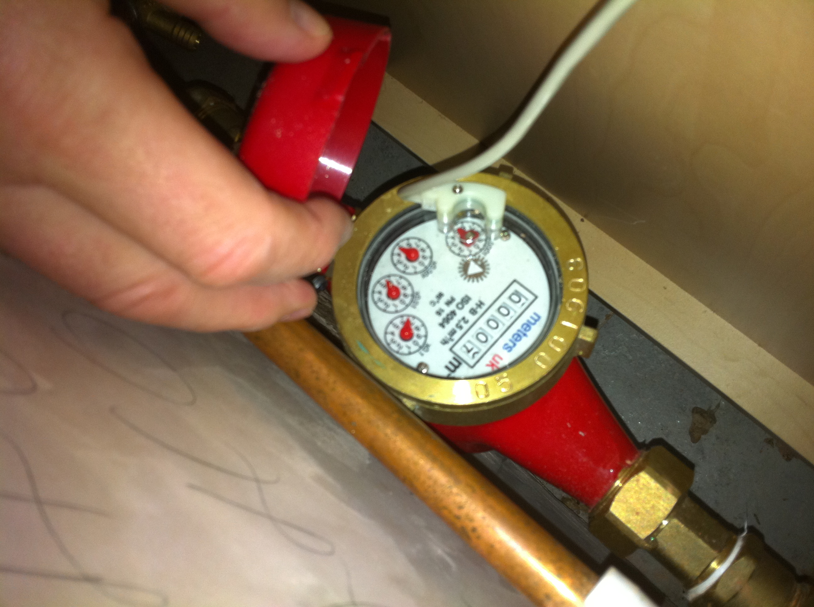
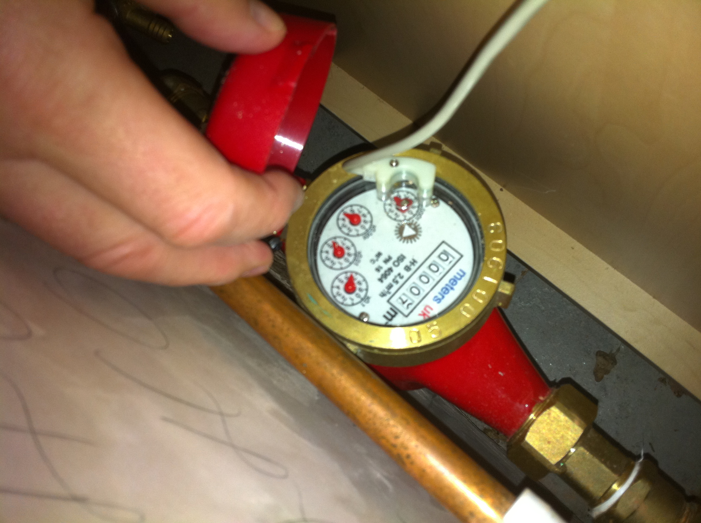
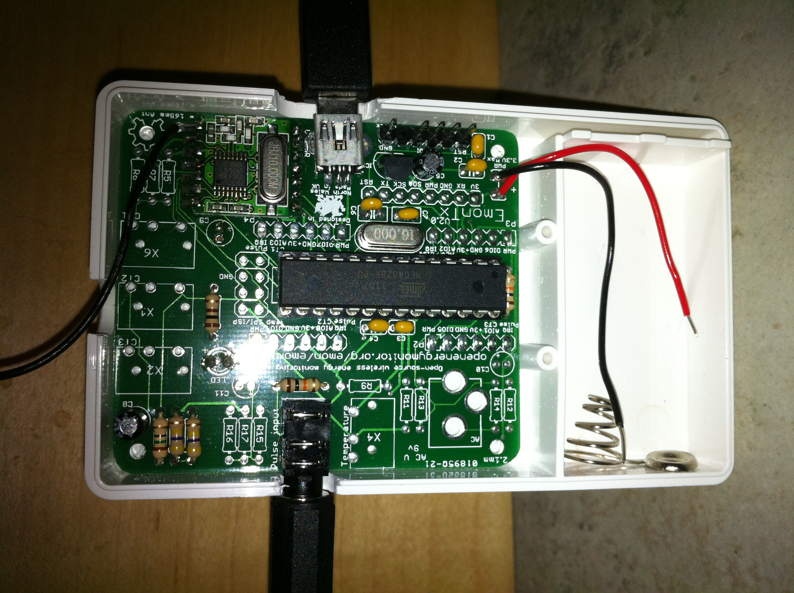
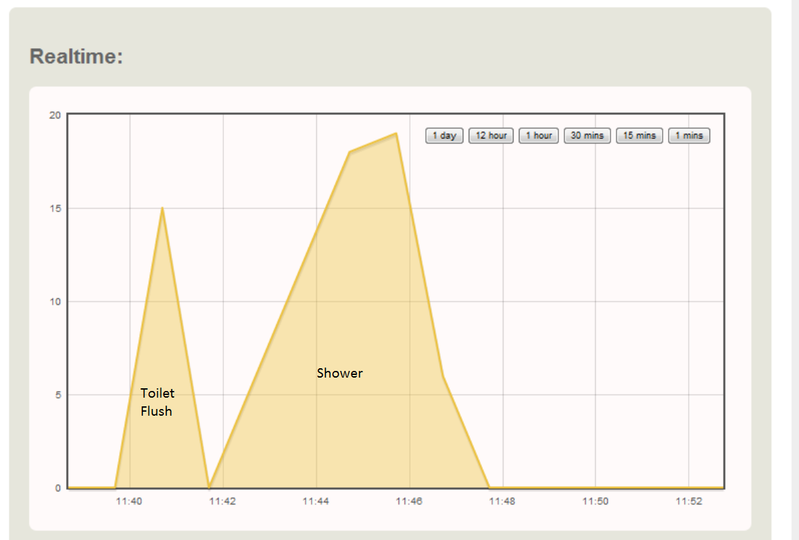
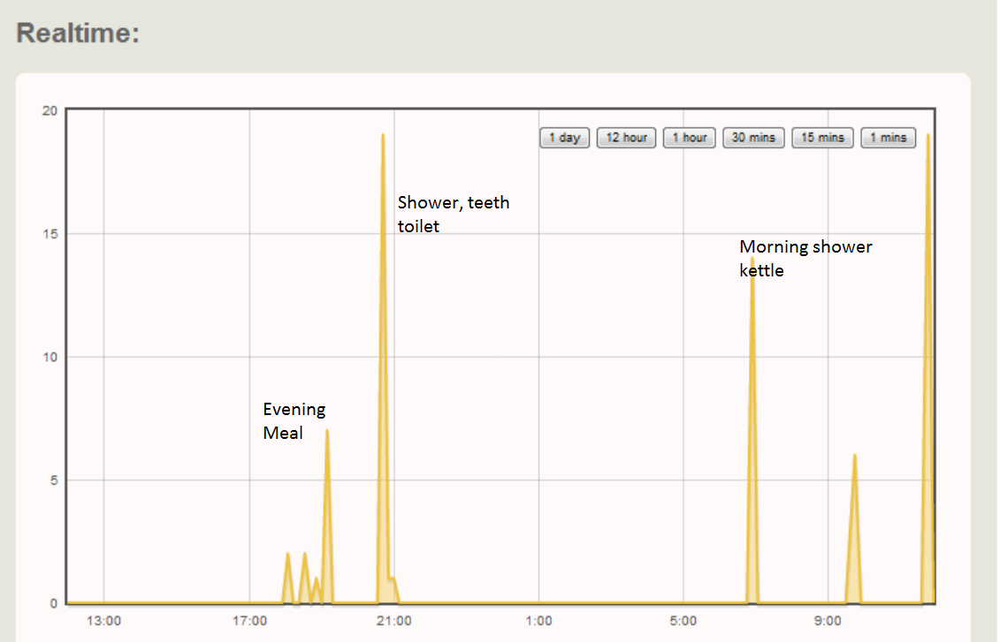

by Andygodber
This build documents setting up an emonTx as a water usage logger using the IRQ pulse counting port to count the pulse outputs from a water meter.
In order to implement water monitoring, I ended up buying a water meter from eBay for about £16, which pulses for every 1 litre used. A local plumber fitted it for £65.
 

The utility company's water meter is wired to a touchpad they use to take a reading about every 6 months. I sat for ages, and wasted a lot of water, trying to see if it actually generated a switched or voltage-change pulse. I suspect it pulses for every cubic meter, as that is the number that appears on my bill, but I couldn't actually detect anything.
I had a couple of frustrating calls with the utility company trying to find out how the meter worked, or whether they would swap it for one that pulsed every litre, but they didn't understand what I was trying to do, so I ended up buying my own meter.
To make sure the meter was working accurately, I connected it to a commercial pulse logger, made by Enica. I ran the taps for a measured litre and 10 litres of water. The Enica logger showed the new water meter was accurate enough to generate reliable figures.
Other people may be luckier, and already have a useable meter.
I bought an emonTX kit, which comes with components for 1 CT monitor channel, as it was designed for power monitorng.
I followed the pictorial build provided by Glyn. However, I was initially confused by the instructions, as they are for a full 3 channel build. I thought I was missing most of the components. Glyn advised me of my error, although I actually was one capacitor short, which I got from Maplin. Glyn did offer to send a replacement.
I think there is room for improvement on both the 3 channel and 1 channel build instructions, and when I get time, I’ll submit something to help, if others don’t get there first.
Because I wanted to use the pulse counting option, rather than the CT, I redirected the components from the CT circuit to the pulse circuit – primarily, this meant relocating the jack. This mod requires creation of suitable holes in the TX case. I used a Dremel tool to make spaces for the socket and USB connector. The case is pre-drilled for the LED and CT socket.
I loaded up a couple of the sample sketches, which worked and proved my soldering skills weren’t as bad as I'd feared.
The emonTX transmits via an RF12B module. This is supplied, but needs a corresponding module on the receiving Nanode, which I made sure I ordered at the same time as the TX.
With all parts assembled, I loaded up the final TX sketch and the EmonBase sketch into the Nanode.
A couple of minor, and expected, changes were necessary in both sketches, which resulted in successful communication between both devices. I was happily seeing a message every 10 seconds from the Nanode saying there were values on CT1 and zero value on CT2 (pulse) and a value representing the TX’s battery status. CT1 values were seemingly random though, due to the missing capacitor. Installing the replacement stabilised the reading at zero,
I took the TX to the water meter cupboard about 30m and 2 floors away, and connected it to the water meter pulse output, as well as a USB power supply. Turning on the tap, I returned upstairs and was pleased to see values of 1 or 2 pulses appearing on the CT2 count of the serial output of the EmonBase sketch.
In order to record, graph, and ultimately change, water usage, I set up emoncms. I initially installed this on the hosted server I use, but I don’t think I have the appropriate access rights (and/or knowledge) to get it working. Instead, I installed XAMPP on a virtual machine on my local network. After configuring a couple of parameters, invoking the emoncms index webpage generated an SQL database and login id, ready to accept data feeds.
Editing the emonBase sketch to reflect the IP address and database names for the server, I was able to successfully populate the SQL database with values transmitted from the emonTX.
During my initial testing, I left the default data capture rate of 10 seconds enabled for a couple of days. The graphing facilities of emoncms showed reasonable and expected consumption rates around the time the family took showers, filled the kettle, did washing etc. However, during the night, and other periods when there should be little to no water usage, I observed random and frequent records of 1-2 litres of usage. These figures were recorded by the SQL database, but not the Enica monitor that I left connected for comparison.
Co-incidentally, the 10 second data capture rate generates many data records, and could soon fill up a small SQL database, and is too granular for overall daily water usage. Its quite useful for real time monitoring though.
To get a higher level overview of water use, I changed the logging interval to 1 minute (and corresponding RF timeout to 90 seconds). Using this configuration, the random and spurious pulses have disappeared. I am wondering if more frequent RF transmissions in the emonTX are generating spikes, which trigger the pulse interrupt. Glyn has suggested scoping it, which I may do in the future to determine the cause.
With a clean source of data, I'm quite comfortable with the information being presented. I can use this to help the family be aware of their water consumption. Of interest straight away, is how much our ‘old style’ toilets use when flushed. Even though we have put in an expanded plastic bag in the tank, each flush still takes about 15 litres, about a third of a 4 minute shower!
 I'm going to change the default logging interval to 5 minutes and run the emonTX in parallel with the Enica monitor to assess the long term accuracy.
I want to log to Pachube (and possibly emoncms at the same time), but my programming skills aren’t up to the task as I've failed to combine the emonbase/nanode/rf12b/pachube example sketches.
I shall acquire another emonTX to act as the pulse counter for Gas monitoring. This will be another hack, as my current gas meter has no pulse output. I do have an optical generator from ELV, which is supposed to recognise one of the digits cycling past the sensor.
I've got some components from CurrentCost and Derek Kennedy’s Home Automation Hub which all need investigating/integrating.
Finally, I want to combine everything into a dashboard similar to the fantastic one on the BWIRED site.